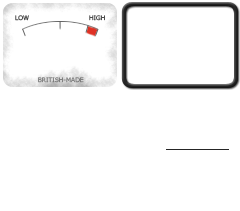

TODO: description goes here
<meter class="demo1" value="0" min="0" max="100"></meter>
<meter class="demo1" value="25" min="0" max="100"></meter>
<meter class="demo1" value="50" min="0" max="100"></meter>
<meter class="demo1" value="100" min="0" max="100"></meter>$('meter.demo1').dialify();<meter class="demo2" value="0" min="0" max="10"></meter>
<meter class="demo2" value="5" min="0" max="10"></meter>
<meter class="demo2" value="8" min="0" max="10"></meter>
<meter class="demo2" value="10" min="0" max="10"></meter>$('meter.demo2').dialify({ 'drawDialFace': false });<meter class="demo3" value="0" min="0" max="12"></meter>
<meter class="demo3" value="2" min="0" max="12"></meter>
<meter class="demo3" value="6" min="0" max="12"></meter>
<meter class="demo3" value="12" min="0" max="12"></meter>$('meter.demo3').dialify({ 'width': 140, 'height': 120 });<meter class="demo4" value="5" min="5" max="15"></meter>
<meter class="demo4" value="10" min="5" max="15"></meter>
<meter class="demo4" value="12" min="5" max="15"></meter>
<meter class="demo4" value="15" min="5" max="15"></meter>$('meter.demo4').dialify({
'pointerRange': { 'min': 0 - Math.PI, 'max': 0 }
});<meter class="demo5" value="0" min="0" max="10"></meter>
<meter class="demo5" value="2" min="0" max="10"></meter>
<meter class="demo5" value="5" min="0" max="10"></meter>
<meter class="demo5" value="10" min="0" max="10"></meter>$('meter.demo5').dialify({
'pointerRotationPoint': { 'y': 60 },
'scaleArcRadius': 36,
'pointerLength': 24
});<meter class="demo6" value="0" min="0" max="10"></meter>
<meter class="demo6" value="5" min="0" max="10"></meter>
<meter class="demo6" value="9" min="0" max="10"></meter>
<meter class="demo6" value="10" min="0" max="10"></meter>$('meter.demo6').dialify({
'class': 'dialify-demo6-custom-class',
'drawSpindle': false
});<meter class="demo7" value="0" min="0" max="10"></meter>
<meter class="demo7" value="4" min="0" max="10"></meter>
<meter class="demo7" value="5" min="0" max="10"></meter>
<meter class="demo7" value="10" min="0" max="10"></meter>$('meter.demo7').dialify({
'dialFaceColor': 'rgb(125, 172, 191)',
'dialOutlineColor': 'rgb(59, 86, 97)',
'scaleRangeColor': 'rgb(145, 195, 217)',
'pointerColor': 'rgb(255, 255, 255)',
'spindleColor': 'rgb(255, 255, 255)',
'spindleOutlineColor': 'rgb(59, 86, 97)'
});<meter class="demo8" value="0" min="0" max="10"></meter>
<meter class="demo8" value="5" min="0" max="10"></meter>
<meter class="demo8" value="7" min="0" max="10"></meter>
<meter class="demo8" value="10" min="0" max="10"></meter>$('meter.demo8').dialify({
'image': 'meter.png',
'width': 120,
'height': 90,
'pointerRange': {
'min': 0 - (Math.PI * 0.609),
'max': 0 - (Math.PI * 0.382)
},
'pointerRotationPoint': { 'y': 130 }
});